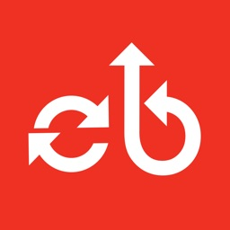
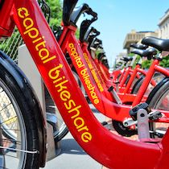
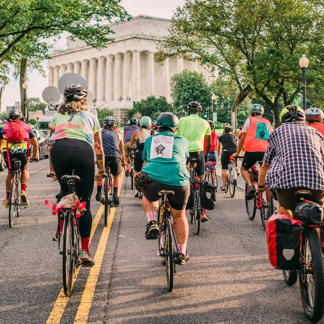
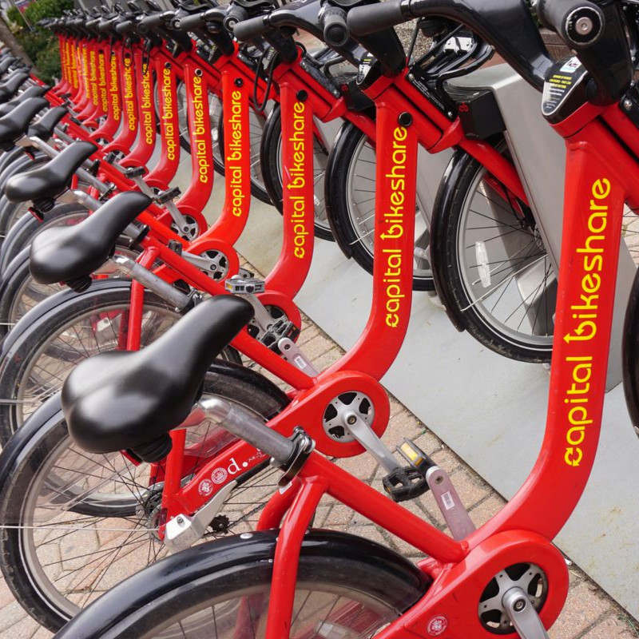
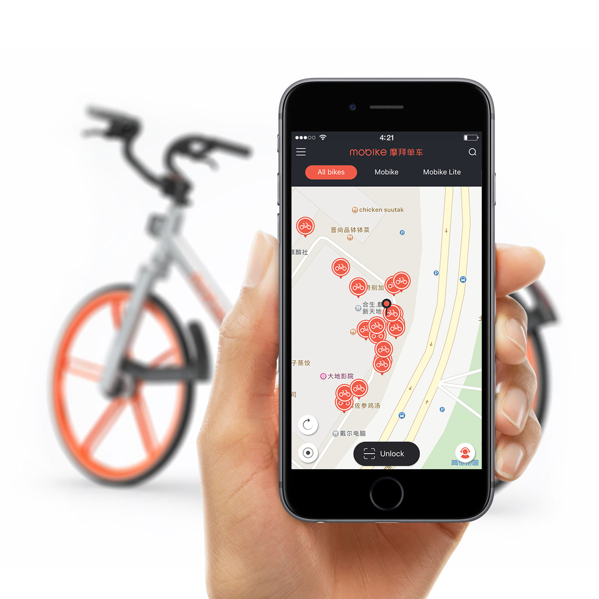
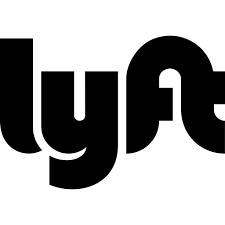

Storia del bike sharing a Washington
Ripercorriamo brevemente le tappe più importanti della diffusione del servizio
-

Agosto 2008
Debutta SmartBike D.C
Prima iniziativa di bike-sharing per la città di Washignton D.C. Il servizio parte con 120 bici sparse in 10 stazioni nella sola business area della città.
-

Settembre 2010
Nasce Capital BikeShare
A seguito dello scarso rendimento, nasce una nuova società con all'interno investitori privati, la quale cambia nome e amplia il suo piano di mobilità. Il servizio CaBi viene ora lanciato con 400 bici in 49 stazioni.
-

Settembre 2011
L'inizio dell'espansione
Viene approvato il piano di espansione per comprire l'intero distretto di Columbia entro 5 anni
-

Settembre 2012
La conquista di una community
Il servizio spopola tra gli abitanti di Washignton arrivando ad avere 2800 biciclette dislocate in 288 stazioni.
-

Agosto 2015
Seconda espansione
Dopo l'acquisizione di nuove infrastrutture, Capital Bikeshare annuncia una nuova espansione per includere maggiormente le città periferiche nei distretti di Arlington, Alexandria e Montgomery.
-

Giugno 2016
Capital Bikeshare approda sugli app store
Viene annunciata lo sviluppo di applicazione per dispositivi mobili. L'app permette di verificare le biciclette disponibili nell'area e aggiunge nuovi piani tariffari per gli utenti casuali.
-

Ottobre 2018
Acquisizione da parte di Lyft
CaBi entra a far parte del gruppo Lyft, che annuncia una piano di investimenti per affiancare al parco bici un nuovo servizio di monopattini elettrici.
-
Presente